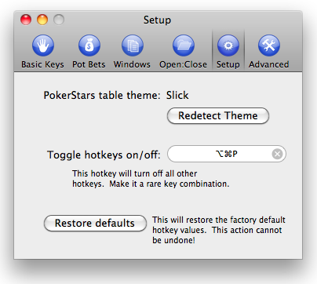

Getting set up.
BlazingStars works with several of the more popular PokerStars themes, including Hyper-Simple, Slick, and Black, and we're actively working on providing support for others. If you have a favourite theme that you'd like to be included, e-mail fullyfunc@gmail.com and I'll do what we can to include it (note: BlazingStars uses image-processing technology to read the PokerStars client screen, and some themes may not work properly. However, I'll give your theme a try and let you know!).

Also on the setup screen, you can choose a global hotkey toggle, which will turn off all the BlazingStars hotkeys system-wide. This is useful when you have selected one or more key combination(s) that conflict with combination in another program. Using the global hotkey toggle will turn off all BlazingStars hotkeys until the global hotkey combination is pressed again to turn them back on.